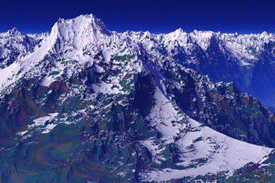
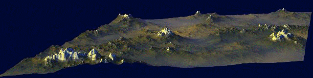

| We consider Ken Musgrave to be the first true fractal-based
artist. Combining programming skill and a good eye for landscapes, he has produced
some of the most convincing fractal landscape pictures. The right image is an example. |
| The simplest terrain pictures are built without
thinking of the underlying natural mechanisms, but rather just reproduce
the visible landscape characteristics. These are called
ontogenetic
models; many are based on
fractional Brownian motion
(fBm). |
| While this may be
fine for small patches of terrain, fBm suffers from having a statistically
uniform roughness. That is, all parts of the picture have the same dimension. |
| Large-range landscapes are more varied: the tops of mountains usually are
rougher than the floors of valleys, and mountains are scattered throughout
foothills and plains. |
| A single dimension will not characterize this
variety of landscape types, so large-range pictures are must be synthesized
with multifractals. The image below is an example of a multifractal surface patch. |
|
 |
|  |
| In addition to a terrain function, four other considerations
are important for generating realistic landscapes. These are atmopsheric effects,
textures, level of detail, and practical methodology (whatever it takes to make the simulation
work). |
| For example, atmospheric perspective introduces a sense of
scale by the blurring and loss of contrast of distant objects viewed through
the atmosphere. The scattering that produces these effects is complex, but
efficient ontogenetic approximations can be incorporated into the code. |
| The left picture below does not use atmospheric perspective, and looks very
much like a scene from an old movie. We expect to see a guy in a Godzilla suit rise
up from the water. |
| The right does use atmospheric perspective. Click on each image for an enlargement. |
|
{kind=link}
{kind=link}